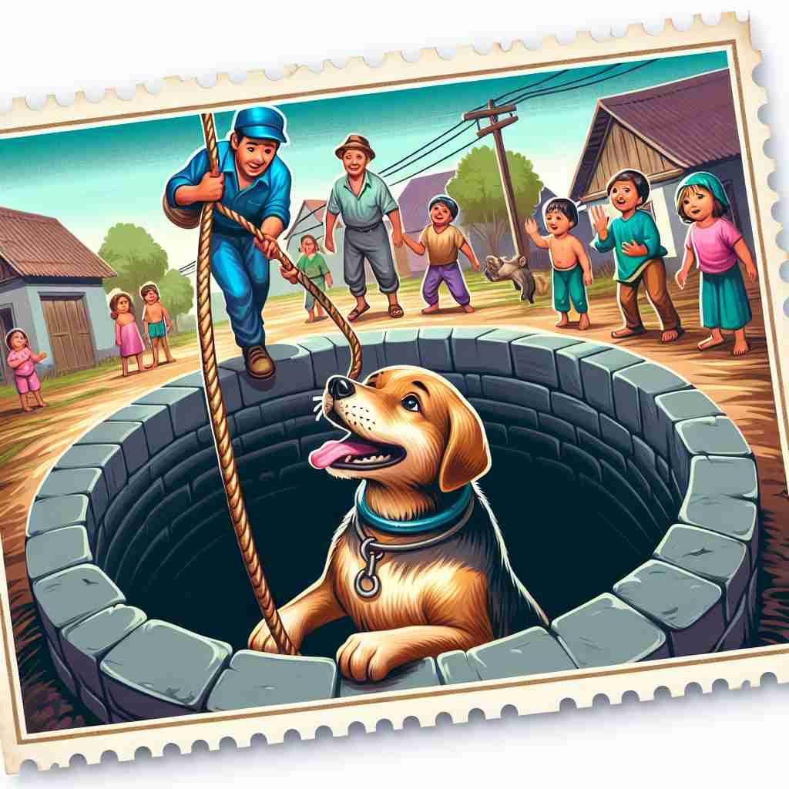

💬 The climber is aware of the dangers of heroin addiction in their community. 攀登者意识到他们社区中海洛因成瘾的危险。

💬 Many people struggle with heroin addiction in their community. 许多人在他们的社区中与海洛因成瘾作斗争。
💬 The climber is aware of the dangers of heroin addiction in their community. 攀登者意识到他们社区中海洛因成瘾的危险。
💬 Many people struggle with heroin addiction in their community. 许多人在他们的社区中与海洛因成瘾作斗争。
🧠 海洛因这个词源于'英雄'的概念，强调其强大的效力。记住它是一种极具吸引力但非常危险的物质，可以帮助你理解其字面和比喻用法。无论是实际的毒品还是比喻中的'令人上瘾的事物'，都体现了这种强大而危险的吸引力。
🔈 ['herəʊɪn]
🗝️ n. a powerful illegal drug made from morphine, highly addictive and used as a narcotic 一种由吗啡制成的强效非法毒品，具有高度成瘾性，用作麻醉剂。
🎭 在一个昏暗的城市街角，一名年轻人偷偷地从一个陌生人手中接过一个小小的白色粉末袋子。这个年轻人内心充满了隐秘的痛苦，他迅速走到附近的小巷中，准备使用一种令他上瘾的强效药品——海洛因。这个场景展示了海洛因作为一种强效的非法麻醉药物的含义。
💬 The police seized a large quantity of heroin in the drug raid. 警方在毒品突袭中查获了大量海洛因。
🌳 由 'hero'（英雄）加上后缀 '-in' 形成，最初用于指一种“英雄般”的强效药物。
💡 记忆 'heroin' 时，可以联想到一种药物在其推出时被视为具有 '英雄般' 效果的意图。这可以通过与 'heroic'（英雄的）联系来加深记忆。
🗝️ n. something that has a powerfully attractive or addictive quality 一种具有强烈吸引力或令人上瘾特质的事物
🎭 在一家高档巧克力店里，一位顾客久久地盯着柜台上的手工巧克力，眼神充满了渴望。她轻声自语道：'这些巧克力就像海洛因一样，让人无法抗拒。'这个场景展示了'heroin'作为一种有强大吸引力或上瘾品质的物品的象征性用法。
💬 For many people, social media has become a kind of digital heroin. 对许多人来说，社交媒体已成为一种数字海洛因。
🤔 比喻性用法，源于毒品的强烈吸引力和成瘾性